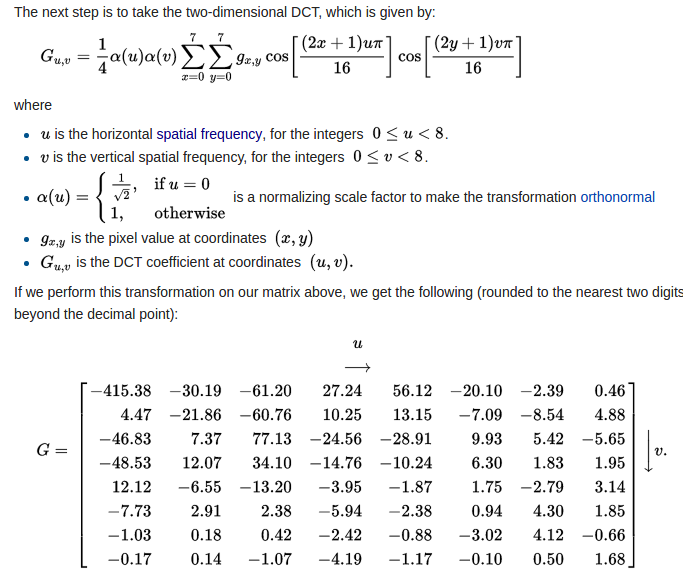
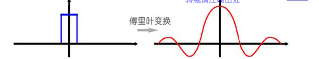

Dct Algorithm
A discrete cosine transform (DCT) expresses a finite sequence of data points in terms of a sum of cosine functions oscillating at different frequencies.
1.DFT and DCT
In particular, a DCT is a Fourier-related transform similar to the discrete Fourier transform (DFT), but using only real numbers. The DCTs are generally related to Fourier Series coefficients of a periodically and symmetrically extended sequence whereas DFTs are related to Fourier Series coefficients of a periodically extended sequence. DCTs are equivalent to DFTs of roughly twice the length, operating on real data with even symmetry (since the Fourier transform of a real and even function is real and even), whereas in some variants the input and/or output data are shifted by half a sample. There are eight standard DCT variants, of which four are common.
2.Example



There is an example of IDCT: Consider this 8x8 grayscale image of capital letter A.


傅里叶变换，是将一个时域非周期的连续信号，转换为一个在频域非周期的连续信号。
